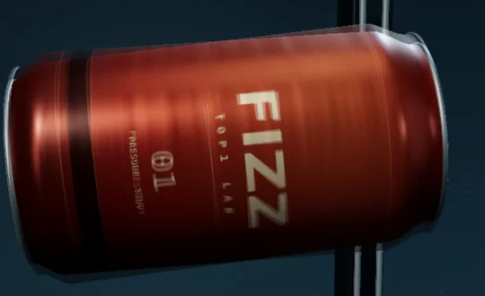
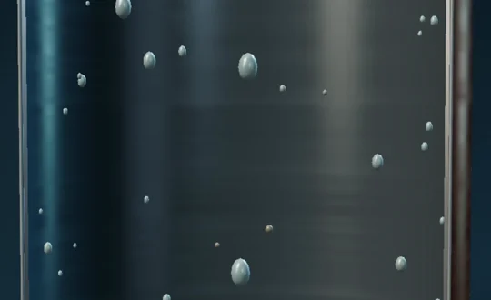
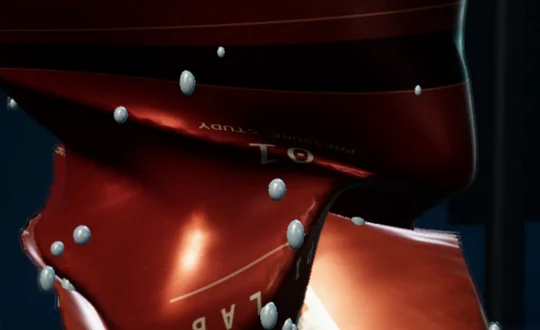

PROJECT 001 / ORIGINAL 3D SHORT
Who Crushed the Can?
Cinema Edition
An aluminium can folds with no one touching its sides. Follow the steam, the waterline, and the pressure that makes the metal give way.
- Run time
- 0:29
- Camera setups
- 11
- Vertical format
- 9:16

01 / THE TIMELINE
Shot guide
Jump straight to the flip, the cutaway, or the fold. Each timecode plays from inside that shot.
-

0:10.40Flip & splash -

0:15.75Inside the can -

0:23.85Slow-motion fold
Full shot list
02 / THE PRODUCTION FILE
How it was made
A custom 3D scene, timed to the Urdu narration. No stock footage or text-to-video export.
- 01 / STORY
Start with the snap
Pehle can pichakti hai. Phir cutaway dikhata hai ke bhaap kahan jaati hai, opening kaise seal hoti hai, aur andar ka pressure kyun girta hai.
- 02 / 3D SET
Build the can in layers
Three.js mein patli metal shell, asli opening wala lid aur alag base banaye. Warm lights aur cool reflections se brushed metal ki folds nazar aati hain.
- 03 / MOTION & VFX
Time the water contact
Rig can ko lift, flip aur lower karti hai. 0:10.25 par opening paani chhooti hai; ripples, drops aur splash sound isi cue se start hote hain. Ye authored animation hai, lab simulation nahi.
- 04 / EDIT & MIX
Leave room for the crack
Arena ki selected Urdu voice, Roman Urdu captions aur code se bani Foley ko sync kiya. Replay par voice aur captions rukte hain taake metal ki awaz clear ho. FFmpeg ne 29-second MP4 export ki.
Read the Roman Urdu narration
- 0:00 Is can ko kisi ne dabaya nahi. Phir ye pichak kaise gaya?
- 0:03.8 Can ke andar paani garam hua. Bhaap uthi, aur zyada tar hawa bahar nikal gayi.
- 0:08.9 Phir iska munh thande paani mein dooba. Hawa ke wapas aane ka raasta band.
- 0:13.6 Andar ki bhaap thandi hote hi boondein ban gayi. Andar ka pressure tezi se gir gaya.
- 0:19.2 Lekin bahar ki hawa utne hi zor se dhakka de rahi thi.
- 0:22.9 Metal crack and water splash; no narration.
- 0:24.6 Paani ne bas raasta band kiya. Can ko hawa ne kuchla.